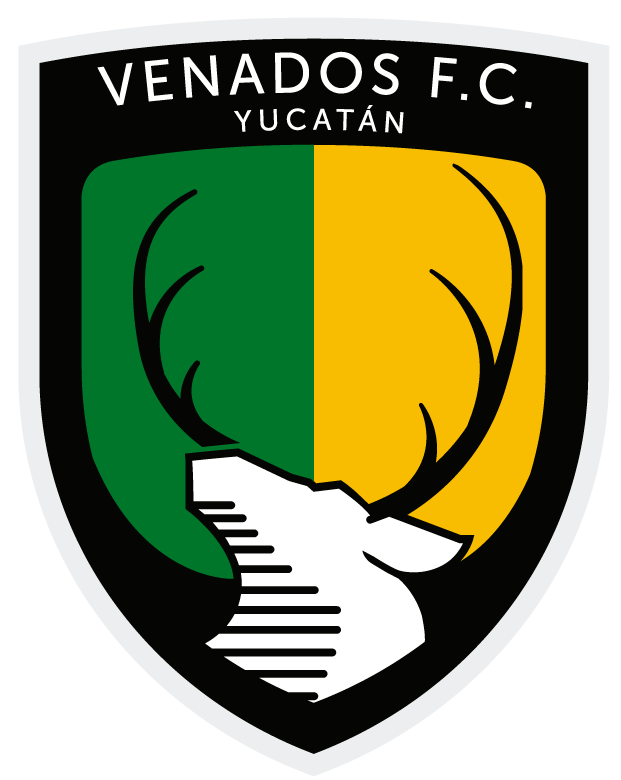

<div class="wrapper">
    <div class="top-navbar">
        <div class="hamburger">
        <div class="one"></div>
        <div class="two"></div>
        <div class="tree"></div>
        </div>
        <div class="top-menu">
            <div class="logo">Venados FC</div>
            
        </div>
    </div>
    <div class="sidebar">

    <div>
    </div>
    
        <ul>
            <li><a routerLink="/Header">
                <span class="icon"><i class="fas fa-home"></i></span>
                <span class="titlle">Home</span>
            </a></li>
            <li><a routerLink="/Estadisticas">
                <span class="icon"><i class="far fa-chart-bar"></i></span>
                <span class="titlle">Estadisticas</span>
            </a></li>
            <li><a routerLink="/jugadores">
                <span class="icon"><i class="fas fa-users"></i></span>
                <span class="titlle">Jugadores</span>
            </a></li>
            <li> <a routerLink="/partidos">
                <span class="icon"><i class="fas fa-futbol"></i></span>
                <span class="titlle">Partidos</span>
            </a></li>
        </ul>
    </div>
    <div class="main_container">
        
        <router-outlet></router-outlet>
    </div>
    

</div>
